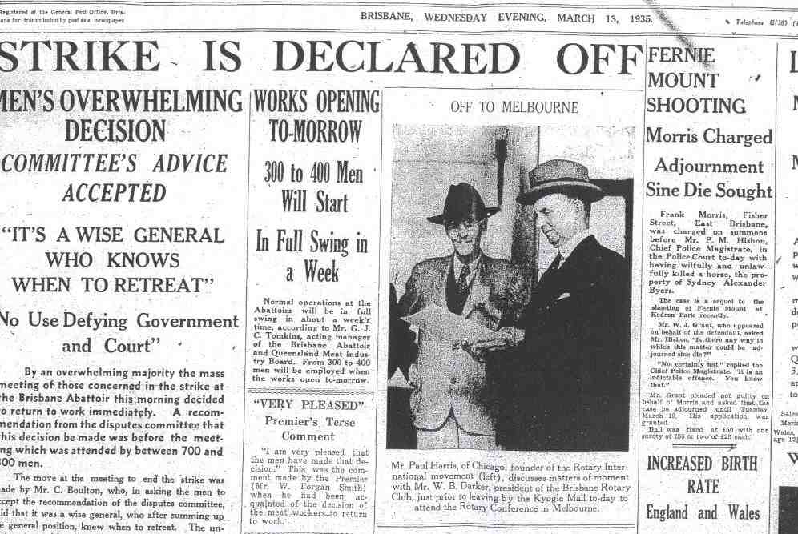
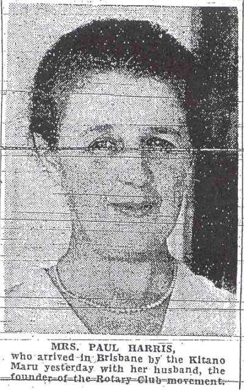
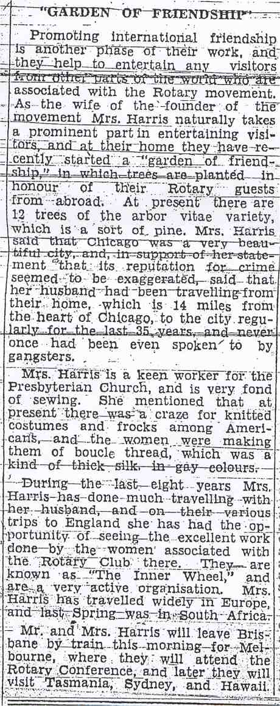

|
|
| SEARCH |
Rotary Club of Brisbane |
| District 9600 Brisbane, the birthplace of RYLA Host Club Convention of 2003 Founded 29 May 1923 Club #: 17787 Brisbane - Queensland - Australia |
|||
| The Rotary Club of Brisbane was
not sponsored by another Club but was formed under the old system of a
Rotary Commissioner traveling to a town and getting together community
leaders. In the case of Brisbane, the Commissioner was Henry Braddon
(later Sir) from the Rotary Club of
Sydney. The Club was chartered on 29 May 1923 with a membership of 16. The Charter President was Peter B Macgregor - a leading Barrister. The Club has been responsible for the sponsoring of the following Clubs: Mackay and Townsville in 1926-27 (with the involvement of Immediate Past President Tom McWilliam in conjunction with Rotary Commissioner Sir Henry Braddon of Sydney Rotary Club), Ipswich, Bundaberg (1929-30), Toowoomba, Maryborough, Lismore (1931-32), Fortitude Valley, South Brisbane, Brisbane North, Brisbane West, Brisbane Mid-City. During its history the club has carried out many outstanding projects including: Establishment of the Queensland Society for Crippled Children Establishment of International House at the University of Queensland Gundoo Week which later developed into R.Y.L.A. Week, now a world wide project of Rotary International |
|||
| Brisbane hosted Paul Harris and his wife in 1935 (see articles, click to enlarge and read) | |||
| The Telegraph,
13 March 1935, front page  |
Telegraph
article on Harris' arrival |
Continuation of
article and an explanation of "He Profits Most Who Serves Best." To
understand the origin and meaning of this motto,
click here |
Courier
newspaper interview of 13 March 1935, continued in second thumbnail |
| Jean Harris is
a goodwill ambassador for Rotary and her home in Chicago |
An interview in
The Courier on board their ship  |
She speaks of a
group known as the "Women of Rotary" |
Her description
of the friendship garden in Chicago and of their travels  |
| Details of a
tea in her honor |
An afternoon
tea and details |
The founder
upon his departure |
Acknowledgement Our thanks to Heritage Planning "Consultants, Basil T. Veal; Carolyn Nolan, History Consultant and Dr. Keith Watts 2001-02 president Rotary Club of Brisbane for their efforts in obtaining this important information. |
RGHF members, who have been invited to this page, may register RGHF members, who have been invited to this page, may register If a DGE/N/D joins prior to their year, they will have more exposure to Rotary's Global History by their service year. This will be beneficial to all concerned. *Based on paid members, subscribers, Facebook friends, Twitter followers, mobile app users, History Library users, web pages, and articles about Rotary's Global History RGHF Home | Disclaimer | Privacy | Usage Agreement | RGHF on Facebook | Subscribe | Join RGHF | |